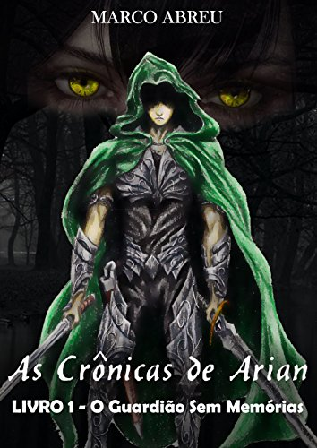

- 
-

-

-
.png "Jogador número 1")
Livros Disponiveis
Sinopse: A Pequena Garota encontra o excêntrico Aviador, que a introduz ao mágico mundo do Pequeno Príncipe. Neste mundo em que tudo é possível, a Garota aprende a redescobrir sua infância.
Lançamento: 1943
Sinopse: Amanda e Dawson se apaixonaram perdidamente na primavera 1964. Ela, uma garota bonita e de família tradicional, via no namorado um porto seguro para toda a sua paixão e seu espírito livre. Separados pelo destino, cada um seguiu o seu caminho até que, após 20 anos, um encontro inesperado traz à tona sentimentos que estavam perdidos no passado.
Lançamento: 2014
Sinopse: Um garoto acordou sem suas memórias perto de uma estrada do Sul. Com ele, apenas uma espada em condições ruins, mas com propriedades anormais. Ajudado por uma família, e depois por membros de uma guild, ele logo constatou que todos que ficavam perto dele acabam sofrendo, e se isolou.
Lançamento: 2018
Sinopse: A jovem e peculiar Louisa "Lou" Clark transita de emprego a emprego para ajudar a sustentar sua família. Entretanto, sua atitude alegre é testada quando se torna cuidadora de Will Traynor.
Lançamento: 2012
Sinopse: A estudante Bella Swan conhece Edward Cullen, um belo mas misterioso adolescente. Edward é um vampiro, cuja família não bebe sangue, e Bella, longe de ficar assustada, se envolve em um romance perigoso com sua alma gêmea imortal.
Lançamento: 2005